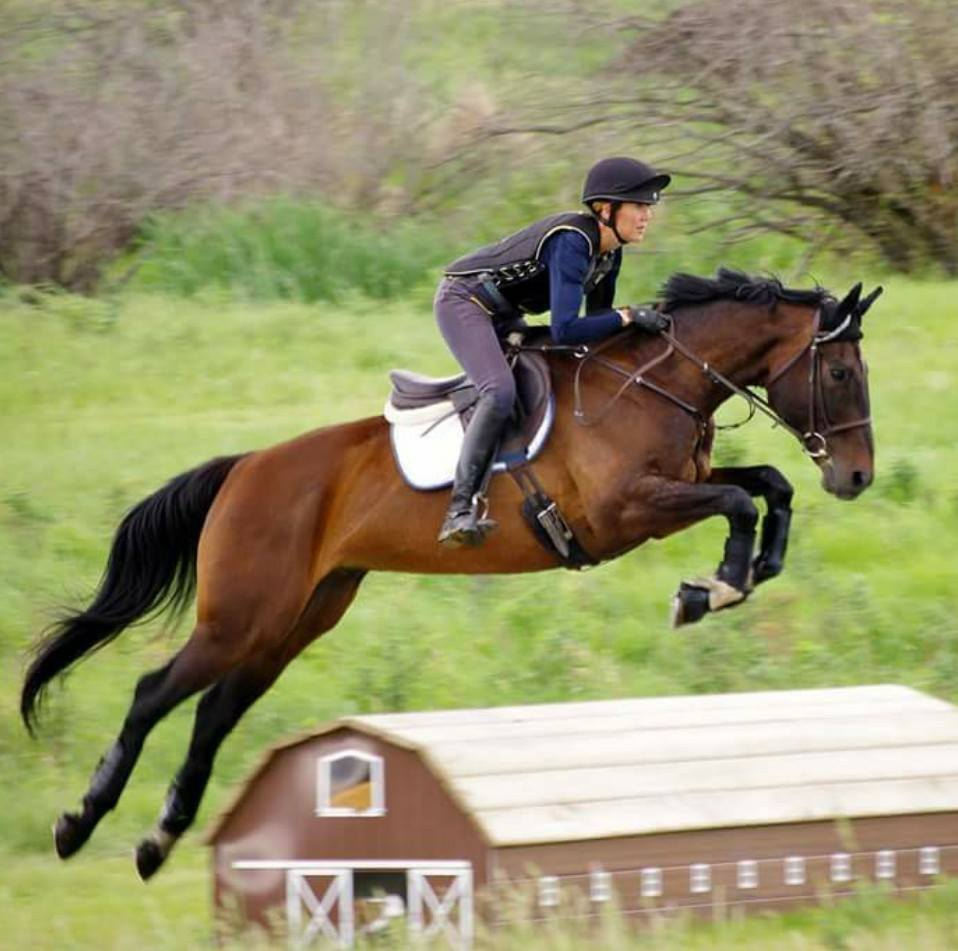

Horse Trials Saskatchewan is group looking to promote and develop horse trials in Saskatchewan. Described as "equestrian triathlon," horse trials, or eventing, is considered to be the ultimate test of a horse and rider pair's partnership, talent and courage. Eventing consists of three phases: dressage, cross country and show jumping. Each discipline is scored individually, and the competitor with the lowest score (fewest penalty points) wins.
The first eventing competition was in 1912. The design of the three-day eventing format was influenced by the program of military horses. In fact, the competitors in the first Olympic three-day event had to be active Army officers mounted on military horses!
The first phase of the competition, dressage is intended to test the horse's gaits, responsiveness to aids, and obedience through a series of movements that are memorized from a test. The dressage test in performed in an enclosed arena. Judges evaluate each individual movement from the dressage test, giving it a mark between zero and 10, with zero being "not executed" and 10 being "excellent". The individual scores for each movement are totalled up at the end of the test.
The second phase of the competition, cross country is intended to test the horse and rider pair's fitness, courage, and jumping ability. It usually consists of 24 to 36 solid obstacles over varied terrain that test the rider's ability to correctly pace their horse within the set time limit. An optimum time to complete the course is set, and the pair is penalized for exceeding the time limit or errors such as refusals or run outs. The fall of a rider results in elimination.
The third phase of the competition, show jumping is intended to test the horse's stamina and how well the horse recovers after the cross-country phase. It consists of a course of brightly coloured, lightweight jumps that can be knocked down. It is a speed event that, unlike hunter-style jumping, isn't judged on the horse's style, manners or movement. Instead, placings are determined by the time it takes for the horse to complete the course. Time penalities for refusals or knocking down a rail are added to the final time score.
Stay tuned for upcoming events!